VARCO Sound for Unity
VARCO Sound는 AI 오디오 제작을 Unity 에디터 안으로 가져옵니다. 사운드 라이브러리를 찾거나 외부 툴을 오갈 필요 없이, 필요한 소리를 설명하면 프로젝트를 벗어나지 않고 바로 생성할 수 있습니다. 효과음, 배경 음악, 크리처 보이스, 음성 대사까지 한 창에서 만들고, 생성한 결과는 곧바로 씬에 가져다 쓸 수 있습니다.
이 가이드에서는 플러그인 설치, 첫 사운드 생성, 그리고 각 도구의 기능을 다룹니다.
호환성 (Compatibility)
VARCO Sound는 Unity 에디터 안에서 동작하며, 아래 버전과 플랫폼을 지원합니다.
- 버전: 2021.3 LTS, 2022.3 LTS, Unity 6 (6000.x)
- 플랫폼: Windows, macOS (에디터)
오디오는 서버에서 생성되므로, 프로젝트의 렌더 파이프라인과 관계없이 동일하게 동작합니다.
사용에 필요한 것
- 인터넷 연결 — 사운드는 온라인 API 호출로 생성되므로, 작업 중에는 플러그인이 온라인 상태여야 합니다.
- VARCO Sound API 키 — VARCO 계정에서 발급합니다. 발급 방법은 다음 섹션에서 안내합니다.
VARCO Sound는 에디터에서 작업할 때 사용하는 도구입니다. 게임을 만드는 동안 오디오를 생성하고 다듬은 뒤, 완성된 클립을 여느 에셋처럼 빌드에 포함하면 됩니다. 실시간(런타임) 생성은 지원하지 않습니다.
설치
1. 패키지 임포트
.unitypackage 파일을 다운로드한 뒤, Unity에서 Assets → Import Package → Custom Package… 로 이동해 파일을 선택하고 내용을 임포트합니다.
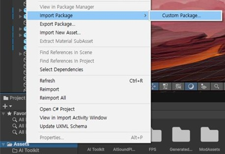
2. 창 열기
메뉴 바의 Window ▸ VARCO Sound 에서 플러그인을 엽니다. 다른 에디터 창처럼 자유롭게 도킹할 수 있습니다.

3. API 키 연결
VARCO Sound를 처음 열면 첫 화면에서 API 키를 입력하라는 안내가 나타납니다.
- Get API Key 를 클릭하면 브라우저에서 VARCO API 페이지가 열립니다.
- 페이지에서 키를 발급해 복사합니다.
- 복사한 키를 플러그인에 붙여넣습니다.
키는 이후 설정(⚙️) 메뉴에서 언제든 변경할 수 있으며, 같은 메뉴에서 현재 크레딧 잔액도 확인할 수 있습니다.
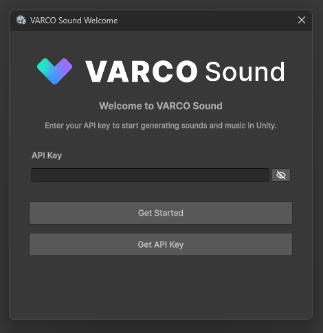
시작하기 (Getting started)
VARCO Sound 창은 Sound, Variation, Loop, Creature, Music, Voice 여섯 개 탭과 오른쪽 위의 정보(ⓘ)·설정(⚙️) 버튼으로 구성됩니다.
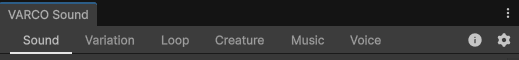
아이디어를 씬 속 클립으로 만드는 가장 빠른 흐름은 다음과 같습니다.
- Sound 탭을 열고 원하는 소리를 입력합니다 — 예: "footsteps on wet gravel".
- Generate 를 누릅니다. 잠시 후 후보 몇 개가 생성됩니다.
- 결과를 미리 들어보고, 마음에 드는 것을 두 가지 방법 중 하나로 프로젝트에 가져옵니다.
- Save 로 프로젝트에
.wav 파일로 저장하거나,
- 씬의 Audio Source로 드래그 하면 클립이 저장되면서 동시에 할당됩니다.
Save 를 클릭하면 클립은 기본 저장 폴더(Assets/VARCOSound/Generated)에 저장됩니다. Save 옆 화살표를 눌러 Save to… 를 선택하면 파일 탐색기로 위치를 직접 지정해 저장할 수 있습니다. 기본 폴더는 설정 메뉴에서 언제든 바꿀 수 있습니다.
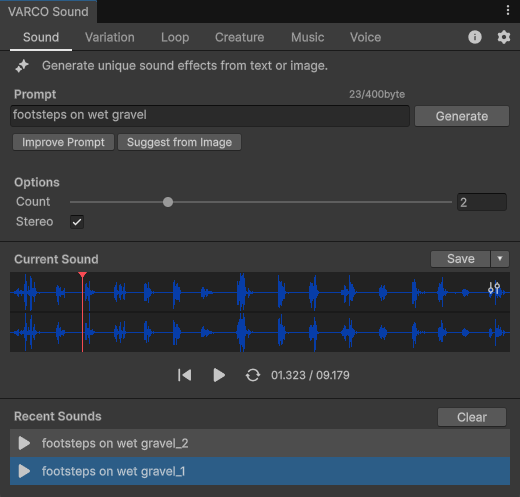
여기서부터는 도구 살펴보기 에서 각 탭의 기능을, 예시 에서 도구들이 실제 작업에서 어떻게 어우러지는지 확인할 수 있습니다.
도구 살펴보기
VARCO Sound는 각각 한 가지 오디오 작업을 담당하는 여섯 개 탭과, 어느 파형에서든 열 수 있는 오디오 에디터로 이뤄집니다.
Sound — 설명으로 효과음 생성
소리를 설명하면 VARCO Sound가 여러 후보를 생성해 고를 수 있게 해줍니다. 한 번에 몇 개를 만들지, 스테레오로 출력할지 모노로 출력할지 선택할 수 있습니다.
프롬프트 옆에는 두 가지 도우미가 있습니다.
- Improve Prompt — 입력한 설명을 모델이 더 잘 처리할 수 있는 형태로 다듬어 줍니다. 영어 외의 언어로 프롬프트를 작성할 때도 이 기능을 사용합니다.
- Suggest from Image — 참조 이미지를 보고 그 장면에 어울리는 소리를 추천합니다. 만들고 있는 화면의 스크린샷을 주면 필요한 소리들의 프롬프트를 제안해 줍니다.
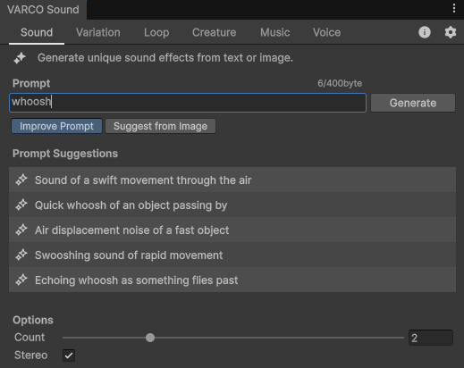
Improve Prompt |
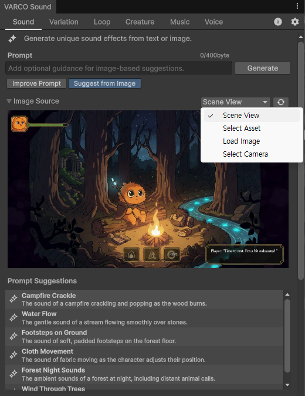
Suggest from Image |
이미지 선택 방법. VARCO Sound가 이미지를 입력받는 곳이라면 어디서든 — Sound 탭의 Suggest from Image든, Music 탭의 참조 이미지든 — 네 가지 방법으로 이미지를 가져올 수 있습니다. Scene View 캡처, 프로젝트의 이미지를 고르는 Select Asset, 디스크의 파일을 불러오는 Load Image, 씬의 카메라 화면을 가져오는 Select Camera 입니다.
Variation — 같은 소리의 다른 테이크
같은 발소리나 검 휘두르는 소리가 매번 똑같이 반복되면 금방 티가 납니다. Variation에 클립을 주면 원본의 느낌은 유지하면서 세부가 조금씩 다른 테이크들을 만들어 줍니다. 강도를 낮추면 미세하게, 높이면 더 크게 달라지며, 필요한 만큼 생성할 수 있습니다.
기본적으로는 클립 전체가 변형됩니다. 일부는 그대로 두고 특정 구간만 바꾸고 싶다면 — 예를 들어 소리의 어택은 그대로 두고 뒷부분만 바꾸고 싶다면 — 파형에서 그 구간만 선택하면 됩니다.
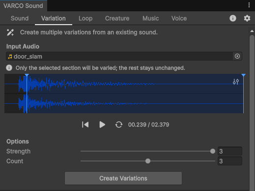
Loop — 끊김 없는 환경음
바람, 비, 룸 톤 같은 환경음은 이음매가 들리지 않게 반복돼야 합니다. Loop에 클립을 주면 원하는 길이만큼 매끄럽게 반복되는 버전을 만들어 줍니다.
깔끔한 루프 지점을 찾기 위해, 도구가 반복 구간에 맞지 않는 부분을 덜어낼 수 있습니다. 반드시 남아야 하는 부분이 있다면 파형에서 보존 구간으로 선택해 두면, Loop가 그 부분을 유지하면서 작업합니다.
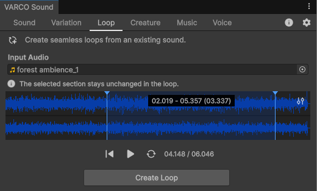
Creature — 목소리를 몬스터 소리로
직접 녹음하거나 클립을 불러온 뒤, Creature가 참조 클립으로 정한 대상 — 드래곤, 오크, 고블린 등 — 의 음색으로 목소리를 바꿔 줍니다. 변환은 원본 녹음을 따라가므로, 무엇을 어떤 호흡으로 말했는지는 그대로 유지되고 음색만 바뀝니다. 변환 강도는 살짝만 입히는 수준부터 완전한 변형까지 조절할 수 있습니다.
녹음의 일부만 변환하고 싶다면 소스 파형에서 그 구간을 선택하면 됩니다 — 선택한 구간만 변환됩니다.
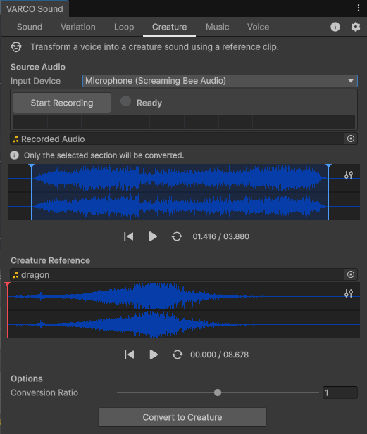
Music — 텍스트나 이미지로 만드는 음악
분위기, 장르, 장면을 설명하거나 톤을 정할 참조 이미지를 제공해 배경·테마 음악을 생성합니다. 프롬프트만, 이미지만, 또는 둘 다 사용할 수 있습니다. 만들고 있는 장면의 스크린샷을 넣으면 화면에 어울리는 음악을 빠르게 얻을 수 있습니다.
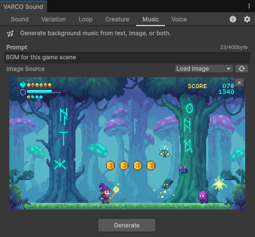
Voice — 텍스트로 만드는 음성 대사
대사를 입력하고 화자를 고르면 Voice가 음성을 합성합니다 — 대사, 내레이션, 보이스오버에 두루 쓸 수 있습니다. 한국어, 영어, 일본어, 중국어를 지원하며, 캐릭터에 맞게 말속도와 음높이를 조절할 수 있습니다. Standard 모드에서는 시드(seed)를 고정할 수 있어, 같은 문장이 매번 같은 결과로 생성됩니다.
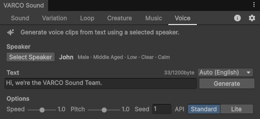
오디오 에디터
모든 파형의 오른쪽 위에는 Edit Audio 버튼이 있어, 클릭하면 전용 편집 창이 열립니다. 간단한 수정을 위해 별도의 DAW를 오갈 필요가 없습니다. 클립을 자르고 다듬거나, 무음을 정리하거나, 게인을 조절하고 레벨을 노멀라이즈하거나, 페이드를 넣거나, 역재생하거나, 모노로 변환할 수 있으며, 작업 중에 원본과 비교하며 들어볼 수 있습니다.
작업을 마치면 Apply 는 편집한 오디오를 파일로 저장하지 않고 원래 탭으로 되돌려 보내고, Save (또는 Save to…)는 새 .wav 파일로 디스크에 저장합니다.
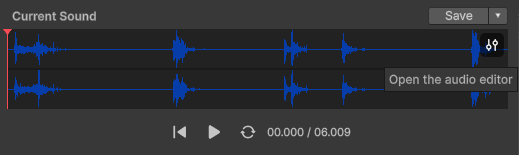
오디오 에디터 버튼
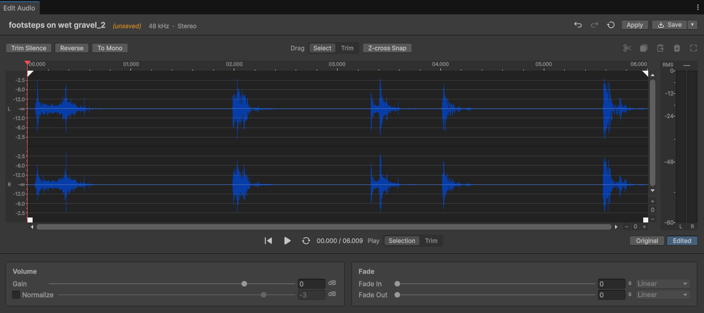
오디오 에디터 창
설정 (Settings)
설정(⚙️) 메뉴에서는 API 키를 관리하고, 남은 크레딧을 확인하고, 생성된 오디오의 저장 위치를 지정할 수 있습니다. 각 탭이 보관하는 최근 결과 개수를 제한하거나, 문제 해결을 위한 상세 로깅을 켜거나, 모든 설정을 기본값으로 초기화할 수도 있습니다 — 이때 API 키는 유지됩니다.
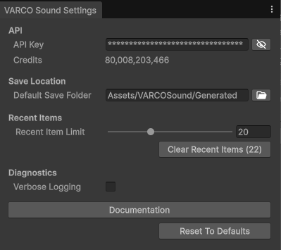
예시
도구들을 엮어 처음부터 끝까지 이어지는 작업 흐름 몇 가지입니다.
발소리를 Variation으로 발전시키기
시작하기에서 발소리 하나를 생성했습니다. 반복될 때 기계적으로 들리지 않도록, 결과에서 Send to Variation 을 클릭하면 클립이 이미 로드된 채로 Variation 탭이 열립니다. 다른 테이크 몇 개를 생성해 무작위로 재생하면, 걷는 동작의 소리가 더 이상 똑같이 반복되지 않습니다.
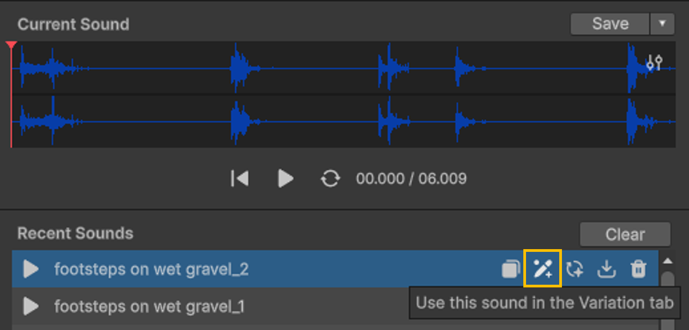
1. Send to Variation |
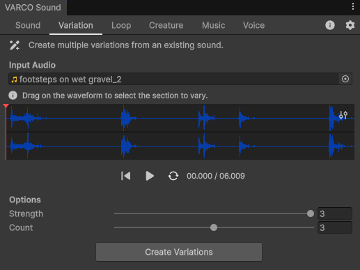
2. 클립이 Variation 탭에 로드되어 다른 테이크를 생성할 준비가 된 상태 |
반복되는 배경 환경음 만들기
레벨에는 그 뒤를 채우는 지속적인 분위기가 필요합니다 — 나무 사이를 스치는 바람, 멀리 내리는 비, 기계실의 웅웅거림처럼요. "Rustling leaves and distant animal calls in a jungle" 같은 기본 환경음을 생성하거나 불러온 뒤, 결과에서 Send to Loop 를 클릭해 Loop 탭으로 가져옵니다. 끊김 없는 버전을 생성해 반복 재생되는 Audio Source에 올리면, 이음매 없이 이어지는 배경 분위기가 씬에 깔립니다.
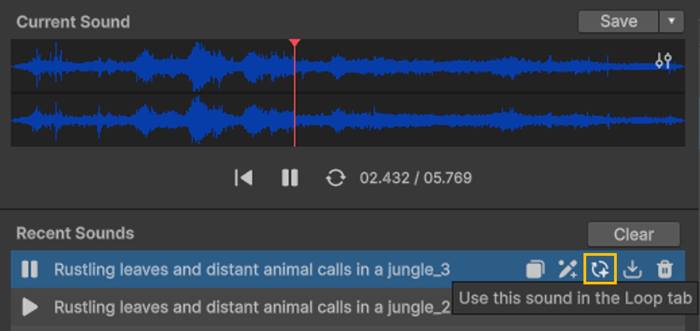
1. Send to Loop |
2. 클립이 Loop 탭에 로드되어 끊김 없는 루프를 생성할 준비가 된 상태 |
내 연기로 몬스터 목소리 만들기
Sound 에서 기본 몬스터 소리 — "low guttural monster growl" — 를 생성해 저장합니다. Creature 탭을 열고 그 클립을 Creature Reference 로 지정합니다. 그런 다음 대사를 직접 연기해 Source Audio 로 녹음합니다 — 여러분이 말한 대사와 그 연기가 크리처에게 그대로 이어집니다.
1. Sound 탭에서 기본 몬스터 소리를 생성해 저장 |
2. 저장한 소리를 Creature Reference로 지정 |
3. 직접 연기한 음성을 Source Audio로 녹음 |
4. 변환하면 몬스터의 목소리로 돌아온 내 연기 |
API 서비스 별 가격 표(Per-Service Pricing)
API 서비스별로 최적화된 과금 단위를 제공합니다. 사용자는 필요한 기능만 선택해 사용할 수 있으며, 각 API의 사용량에 따라 명확하고 일관된 요금이 산정됩니다. 모든 요금은 1회 호출 단가 또는 처리 단위 (Token, Image, Audio Second 등) 기준으로 계산되며, 사용량은 대시보드에서 확인할 수 있습니다.
| Category | Service | 과금 단위 | 기본 단가 | 호출에 필요한
최소 크레딧 |
|---|
| Sound | Variation | 호출당 | 1호출 / 50크레딧 | 50 |
| Sound | Mono to Stereo | 호출당 | 1호출 / 10크레딧 | 10 |
| Sound | Looping | 호출당 | 1호출 / 50크레딧 | 50 |
| Sound | Conversion | 호출당 | 1호출 / 25크레딧 | 25 |
| Sound | Enhance | 호출당 | 1호출 / 25크레딧 | 25 |
| Sound | Music generation (plug-in only) | 호출당 | 1호출 / 200크레딧 | 200 |
| Sound | Enhance-text-prompt (plug-in only) | 호출당 | 1호출 / 0크레딧 | 0 |
| Sound | Image2prompt (plug-in only) | 호출당 | 1호출 / 0크레딧 | 0 |
| Sound | Generate (plug-in only) | 호출당 | 1호출 / 35 + (5 x N samples) 크레딧 | 40 |